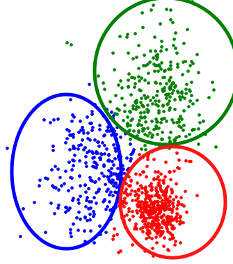
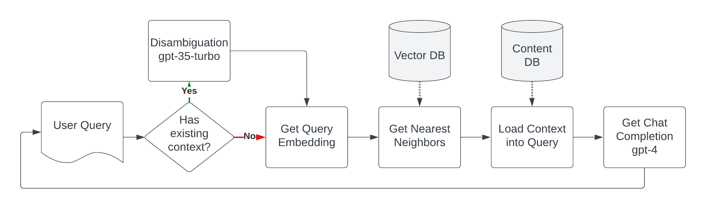

RAG Deep-DiveBarry S. StahlSolution Architect & Developer@bsstahl@cognitiveinheritance.comhttps://CognitiveInheritance.com |
Favorite Physicists & Mathematicians
Favorite Physicists
Other notables: Stephen Hawking, Edwin Hubble |
Favorite Mathematicians
Other notables: Daphne Koller, Grady Booch, Evelyn Berezin |
Some OSS Projects I Run
- Liquid Victor : Media tracking and aggregation [used to assemble this presentation]
- Prehensile Pony-Tail : A static site generator built in c#
- TestHelperExtensions : A set of extension methods helpful when building unit tests
- Conference Scheduler : A conference schedule optimizer
- IntentBot : A microservices framework for creating conversational bots on top of Bot Framework
- LiquidNun : Library of abstractions and implementations for loosely-coupled applications
- Toastmasters Agenda : A c# library and website for generating agenda's for Toastmasters meetings
- ProtoBuf Data Mapper : A c# library for mapping and transforming ProtoBuf messages
http://GiveCamp.org


The OpenAI API
- Chat Completions
- ChatGPT gets most of its power here
- Embeddings
- Enable additional features that can be used with Chat Completions
- Especially useful operationally
Questions to be Answered
- What are embeddings?
- What do they represent?
- How do we compare/contrast them?
- How can we use them operationally?
Embeddings
|
|
3-D Space Projected into 2-D


Cosine Similarity & Distance
|

|
Cosine Distance

Cosine Distance

Clustering
|
 |
Embedding Distance
| Feature | Example |
|---|---|
| Synonym | "Happy" is closer to "Joyful" than to "Sad" |
| Language | "The Queen" is very close to "La Reina" |
| Idiom | "He kicked the bucket" is closer to "He died" than to "He kicked the ball" |
| Sarcasm | "Well, look who's on time" is closer to "Actually Late" than "Actually Early" |
| Homonym | "Bark" (dog sound) is closer to "Howl" than to "Bark" (tree layer) |
| Collocation | "Fast food" is closer to "Junk food" than to "Fast car" |
| Proverb | "The early bird catches the worm" is closer to "Success comes to those who prepare well and put in effort" than to "A bird in the hand is worth two in the bush" |
| Metaphor | "Time is money" is closer to "Don't waste your time" than to "Time flies" |
| Simile | "He is as brave as a lion" is closer to "He is very courageous" than to "He is a lion" |
Vector Databases
|

|
Retrieval Augmented Generation (RAG)
- Combines the benefits of retrieval-based and generative models
- Identify and retrieve relevant information
- Agument context of the generative models
- Generative responses based on the augmented context
- Potential uses include
- Explore large sets of documentation conversationally
- Generate recommendations and insights based on retrieved relevant information
- Summarization of articles in light of known relevant information
Beary - The Beary Barry Bot

Beary Flow
Beary Embeddings Json Snippet

Using LLM Output Has Dangers

Model Answers May Be
|

|
The model is biased
|

|
Embeddings are Reversable
|

|
When Should AI be Used?
- When all possible biases have been accounted for
- When all sensitive data has been removed, tokenized or encrypted
- When the stochastic nature of responses has been accounted for
- A wrong answer is no worse than no answer
- Outputs have been fully constrained
- A human is in-the-loop to fix the inevitable errors
What Are Embeddings?
- Arrays of 1536 floating-point values
- Structured numeric data that represents unstructured text
- Representations of the semantics and context of the source text
- Vectors that support standard mathematical operations